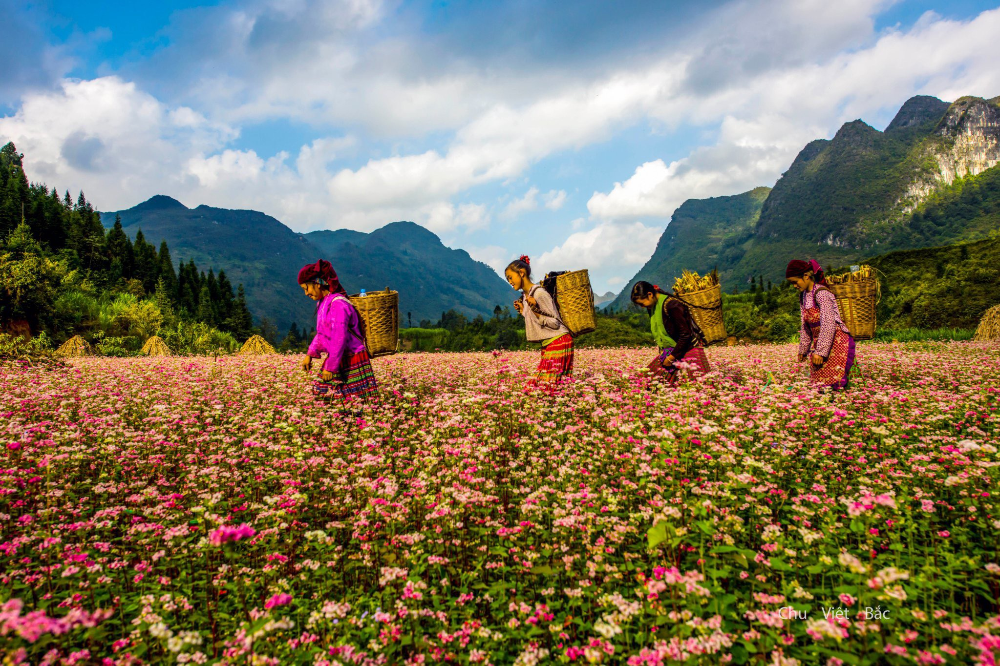

HELLO, IT'S NICE TO MEET YOU

Hà Giang là một tỉnh nằm ở vùng Đông Bắc của Việt Nam, có vị trí địa lý quan trọng khi giáp với Trung Quốc về phía Bắc.
Tỉnh này bao gồm các huyện biên giới như Đồng Văn, Mèo Vạc, Yên Minh và Quản Bạ, nơi có các cửa khẩu quan trọng như Thanh
Thủy và Phó Bảng, đóng vai trò quan trọng trong giao thương quốc tế.
Lịch sử của Hà Giang rất phong phú và đa dạng, bắt nguồn từ thời kỳ tiền sử với sự cư trú của các
tộc người cổ. Qua nhiều thế kỷ, Hà Giang đã trải qua nhiều biến động lịch sử, từ thời kỳ các triều đại phong kiến
Việt Nam, qua thời kỳ thuộc địa Pháp, và đến thời kỳ hiện đại. Trong chiến tranh biên giới Việt - Trung năm 1979,
Hà Giang là một trong những điểm nóng và đã chứng kiến nhiều trận đánh ác liệt. Hiện nay, tỉnh Hà Giang đang phát
triển nhanh chóng về kinh tế, đặc biệt là du lịch với những danh lam thắng cảnh nổi tiếng như cao nguyên đá Đồng Văn, đèo Mã Pí Lèng, và dòng sông Nho Quế thơ mộng.
Văn hóa ẩm thực Hà Giang phong phú và đa dạng, phản ánh nét đặc trưng của vùng núi cao. Các món ăn ở đây
thường được chế biến từ nguyên liệu tự nhiên, sẵn có, với hương vị đậm đà và độc đáo. Người dân Hà Giang coi
trọng việc sử dụng các loại gia vị và phương pháp nấu nướng truyền thống để giữ nguyên bản sắc văn hóa ẩm thực.
Các bữa ăn thường đi kèm với những loại rượu đặc sản, thể hiện sự gắn kết và hiếu khách của người dân địa phương.
Ẩm thực Hà Giang không chỉ là những món ăn, mà còn là biểu tượng của sự giao thoa văn hóa giữa các dân tộc thiểu
số sinh sống tại đây.
Chỉ cần một lần đặt chân đến mảnh đất Hà Giang, mọi du khách đều sẽ bị mê hoặc bởi thiên nhiên núi rừng hùng vĩ, con người thân thiện và nhiều món ăn hấp dẫn.
Và điều mà nhiều du khách cảm thấy tò mò nhất chắc hẳn là đặc sản Hà Giang phải không nào? Vậy vùng đất này có những món ăn nào hấp dẫn du khách.
Hãy để VN Foods giúp bạn hiểu hơn về văn hoá ẩm thực nơi đây nhé!